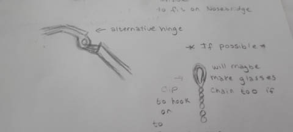
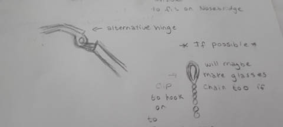

For my final project, my idea is to make cosplay glasses for one of my favourite characters from Black Butler, Grell Sutcliffe, I feel like my idea was a little too ambitious and a didn't realize the amount of time it would take to create each individual parts. So in the end, I'm only making the glasses.
Here are the sketches:

Here are the fusion screenshots:


Here's a failed print attempt!
I had a few problems going with this project, firstly I ended up making the glasses a little too small and then I made the arms too long. I also made the hinges wrong, so I'm unable to connect them.